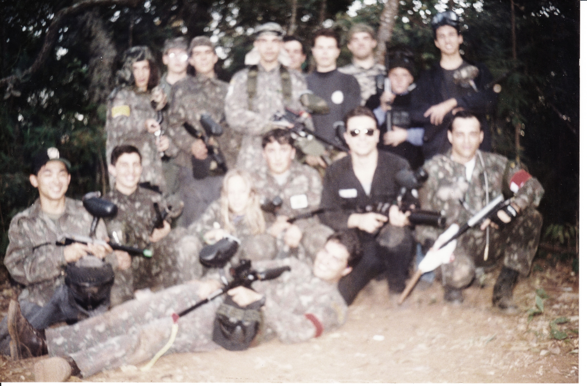
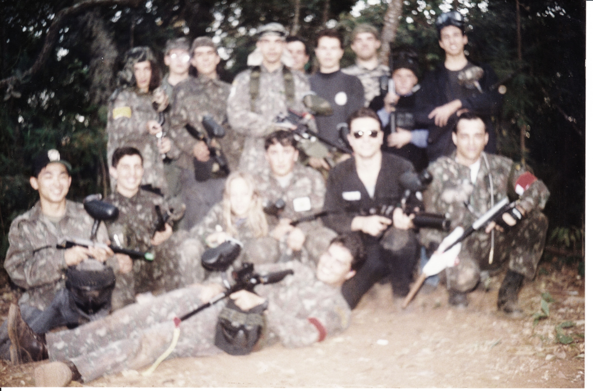

Xtreme Paintball é uma empresa do ramo de esportes radicais, especificamente atuando na locação de material esportivo, de Paintball, para fins recreativos, competições e treinamentos.
Funcionamos de 3a. feira à Domingo em horários agendados ou se o horário estiver livre, os jogos poderão ser realizados sem reserva.
O Paintball é um esporte originário dos Estados Unidos ou Canadá, onde 2 equipes competem por um ou mais objetivos. E utilizam obrigatoriamente a máscara e os "marcadores", sim, não são armas, apenas equipamentos pneumáticos que disparam bolas de gelatina, com tinta solúvel à água dentro delas. Quando um jogador é atingido, a casca quebra e o local fica colorido e com apenas um tiro, o jogador é eliminado daquela partida. Quando um time elimina o outro totalmente, em geral ele já ganha a partida. Ou em alguns jogos, existe a captura de bandeira.
Os jogos possuem uma duração definida, em geral de 12 a 15minutos por partida. E se não houver um vencedor neste tempo, os juízes encerram a partida, para reiniciar, trocando os times de lado e os jogadores recarregarem o gás e as bolinhas.
O equipamento padrão é composto por:

E-mail: contato@xtremepb.com.br
1. O Coordenador - Wang
Esportista, adepto do esporte com mais de 12 anos de prática, começando pelos jogos recreativos e depois participando de competições Nacionais e Internacionais. Realizou diversos eventos recreativos e organizou competições regionais também.
 



2. A equipe - Rangers
Os Rangers ou Juízes, são os responsáveis por orientar, coordenar os jogos e apoiar os jogadores durante os jogos, evitando acidentes, verificando quando um jogador é atingido ou verificar a pedido de outro jogador que tenha disparado nele.